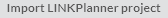

A project is a set of data about a wireless network. A project can contain two or more sites and PMP links between those sites. Projects are saved to the Cambium cloud.
To import an existing desktop LINKPlanner project file, click on  in the Project list page or click Projects then in the top menu bar and the import wizard is shown: